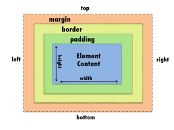

Box Model
What is the difference between block tags and inline tags?
What is the margin, border, and padding?
- Margins deal with the length from the border of the block tag, to the length limit that creates empty space between other block text.
- Borders are the outline of the block tag which makes the relative position of the margin, and padding. The border can be optimized depending on the user's liking.
- Paddings is the space between the text, and the border. The only space altered is inside the border, and is very helpful for organizing text inside the border.

What are units of measurement you can use in CSS?
Some measurements you can use are the em, and the ex. There are many more units of measurement, including relative, and absolute lengths, but these two are the main CSS inline text. But, the most common is px for pixels.